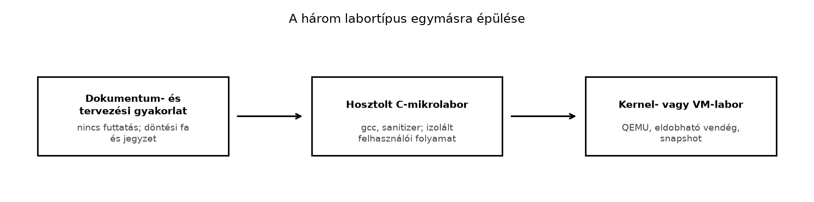

Az operációs rendszerek a számítástechnika egyik legizgalmasabb, ugyanakkor legtöbb tévhittel terhelt területe. A legtöbb fejlesztő naponta használ folyamatokat, szálakat, fájlokat és hálózati hívásokat, mégsem látja pontosan, mi történik a rendszerhívás mögött. Ez a könyv arra vállalkozik, hogy ezt a hiányzó réteget érthetően, mégis mérnöki pontossággal mutassa be. Nem elégszik meg azzal, hogy definíciókat sorol fel: minden fogalmat példával, mérhető viselkedéssel és gyakorlati következményeivel együtt tárgyal.
A könyv motivációja három egymásba fonódó célból fakad. Az első: az operációs rendszerek belső szerkezetének mélyebb megértése. A második: annak bemutatása, hogyan lehet egy egyszerű, de valóban működő kernelt megtervezni és megvalósítani. A harmadik: annak tudatosítása, hogy az OS nem pusztán elméleti kurzusanyag, hanem olyan rendszerprogramozási és mérnöki terület, ahol a tervezési döntések közvetlenül befolyásolják a teljesítményt, a megbízhatóságot és a biztonságot.
Sok tankönyv vagy túl elméleti, vagy ellenkezőleg, kizárólag egy adott kernel forráskódjára koncentrál. Ez a könyv középutat kínál: az alapelveket szabványokból, hivatalos kernel-dokumentációkból és eredeti szakirodalomból eredezteti, majd azokat emulált környezetben, kézzel futtatható laborokkal mélyíti el. A laborok nem „nézd meg, ez így van” típusú feladatok, hanem valódi mérnöki tevékenységek: konfigurációt kell rögzíteni, várt és mért eredményt kell szétválasztani, a kódot pedig úgy kell megírni, hogy a memóriatulajdon, a hibakezelés és a versenyhelyzetek ellenőrizhetők legyenek.
A könyv elsődleges olvasói programozók, rendszermérnökök, beágyazott fejlesztők és olyan technikai vezetők, akik szeretnék érteni, mi zajlik a kernelben, és nem csupán használni akarják az operációs rendszer szolgáltatásait. A szerző feltételezi a C nyelv magabiztos használatát, az alapvető számítógép-architektúrát – regiszterek, memória, megszakítások –, valamint a parancssori rutint. Nem feltételez kernelprogramozási tapasztalatot, de elvárja, hogy az olvasó hajlandó legyen az assembly és a hardverspecifikus részeket a szükséges szintig elsajátítani.
A célközönség ennél azonban tágabb. A rendszergazdák és üzemeltetők számára is hasznos, mert a hibakeresés, a teljesítményelemzés és a biztonsági beállítások megértése megkönnyíti a mindennapi munkát. Azok a biztonsági szakemberek, akik izolációs mechanizmusokkal dolgoznak, a namespaces, cgroups és sandbox fejezetekben találnak szilárd alapot. A hallgatók pedig olyan tanulási utat kapnak, amely a gyakorlatban is alkalmazható tudást ad.
A könyv nem egyetlen „igaz” kernelre épül. Bár a példák többsége a Linux viselkedését tükrözi – mert ez a leginkább elérhető és dokumentált –, a fogalmakat úgy tárgyalja, hogy azok átvihetők legyenek FreeRTOS, Zephyr, QNX, Windows vagy éppen a saját, oktatási célú kernelünk kontextusába is. A hangsúly az elveken és a mérnöki módszeren van, nem a trükkös implementációs részleteken.
A „magabiztos C-tudás” és az „alapvető architektúraismeret” megnevezés önmagában nem elég pontos: négy rövid feladattal ellenőrizhető, és nem eldöntendő (igen/nem) kérdésekkel. Ha valamelyik nem megy, a megadott pótló olvasmányt érdemes a könyv megkezdése előtt elvégezni.
Bitmaszk. Adott egy 32 bites jelzőregiszter
(uint32_t f). Írjon kifejezést arra, hogy (a) beállítsa az
5. bitet, (b) törölje az 5. bitet, (c) megvizsgálja, be van-e állítva,
(d) kiolvassa a 12–15. bitet önálló értékként. Megoldás:
f |= 1u << 5;,
f &= ~(1u << 5);,
if (f & (1u << 5)), illetve
(f >> 12) & 0xFu. Pótló olvasmány: az I. rész
kernelarchitektúra-fejezete (Kernelarchitektúrák és belső struktúrák) és
a III. rész memóriakezelés-fejezete (Memóriakezelés alapjai), ahol a
lapasztal-bejegyzések jelzőmezeit pontosan ilyen maszkokkal kell
kiolvasni.
Pointer-élettartam. Mi a hiba az alábbi függvényben, és hogyan javítaná?
char *name(void)
{
char buf[32];
strcpy(buf, "lab");
return buf; /* hibás */
}Válasz: a buf a függvény visszatérésekor megszűnik, a
visszaadott pointer tehát lógó (dangling) pointer, és a
hívó olvasása meghatározatlan viselkedés. Javítás:
static char buf[32];, hívó által átadott puffer és hossz,
vagy dinamikus allokáció egyértelmű tulajdonosi szerződéssel. Pótló
olvasmány: a III. rész memóriakezelés-fejezete (Memóriakezelés alapjai) és a VII. rész
kernel-implementáció fejezete (Kernel
implementáció), ahol a veremkeret élettartama és a tulajdonviszonyok
explicitté válnak.
Parancssori fordítás. Fordítsa le ugyanazt a forrást kétféleképpen, és tudja megmondani, mit termel a parancs:
# gazdagép
cc -std=c11 -Wall -Wextra -Werror -O2 -c hello.c -o hello.o
cc -std=c11 -Wall -Wextra -Werror -O2 -o hello hello.cAz első csak fordítás (objektumfájl), a második fordítás és linkelés (futtatható fájl); a két lépés ideje külön mérendő, nem összekeverendő. Pótló olvasmány: a VII. rész kernel-implementáció fejezete (Kernel implementáció), ahol a build-lánc és a linker script szerepel.
Hibakód. Mit jelent az open
visszatérési értéke hiba esetén, és mi a hiba az alábbi hibaágban?
int fd = open(path, O_RDONLY);
if (fd < 0) { perror("open"); return 0; }
ssize_t n = read(fd, buf, len);
if (n < 0 && errno == EINTR) { /* újra kell próbálni */ }Válasz: az open -1-et ad, és az
errno-ba írja a hiba okát (ENOENT,
EACCES, ENXIO stb.); a return 0 a
hívó felé sikert jelentene, ezért a hibaágban nem 0-t kell visszaadni.
Az EINTR-t újrapróbálással kell kezelni; az
EINTR-en kívüli read-hibát
(n < 0) is jelenteni kell (perror("read"),
close(fd), hibakód visszaadása), és a fájlleírót minden
ágon le kell zárni (mintakód:
ssize_t n; do n = read(fd, buf, len); while (n < 0 && errno == EINTR); if (n < 0) { perror("read"); close(fd); return -1; }),
a rövid read-et (0 < n < len) pedig nem
szabad hibának venni. Pótló olvasmány: az I. rész rendszerhívás-fejezete
(Rendszerhívások és felhasználói
interfész).
Melyik úthoz melyik előfeltétel kell. A kerneltervező úthoz mind a négy feladat szükséges (a 2. és a 3. nélkül a VII. rész laborjai nem teljesíthetők); a rendszermérnök úthoz az 1., 3. és 4.; a vezetői úthoz egyik sem kötelező, de a 4. (hibakódok és hibajelentések olvasása) segít abban, hogy a csapat hibajelentéseit értelmezni tudja.
A könyvhöz a szerző tényszerű szakmai bemutatkozását a szerző és a kiadó adja közre. Amíg ez nem áll rendelkezésre, ez a szakasz nem tulajdonít a szerzőnek igazolatlan szakmai életutat vagy oktatói múltat; helyette a könyv céljait és az alkalmazott módszert rögzíti, mert ezek a szövegből ellenőrizhetők.
A módszer öt, a könyvben következetesen betartott szabályra épül:
Ez az alapállás nem véletlen. Az operációs rendszerek világában a „state of the art” állítások gyorsan elavulnak, és a hibás benyomásból fakadó döntések súlyos következményekkel járhatnak. Az emuláció azonban önmagában nem védi meg a gazdagépet: a gazdagépen futó QEMU- és lemezképparancsok célpontja tévesztésből valódi lemez is lehet. A biztonság ezért nem ígéret, hanem konkrét feltételek teljesülése:
qemu-img,
dd, mkfs, mount soha nem kap
abszolút eszköznevet (/dev/sda, /dev/nvme0n1
stb.). Ha egy példa mégis abszolút útvonalat mutat, az mindig a vendégre
vonatkozik.# gazdagép vagy
# vendég (root), a jelölés nélküli bash blokk
gazdagépen fut.ls -l,
qemu-img info).Az operációs rendszer nem csupán egy szoftverkomponens, hanem mérnöki rendszer: erőforrás-kezelő, absztrakciós réteg és virtuális gép egyszerre. Ez a hármasság adja a könyv gerincét. Az OS erőforrás-kezelőként osztja el a CPU-t, a memóriát, a tárolót és a hálózati sávszélességet a folyamatok között. Absztrakcióként elfedi a hardver bonyolultságát, és egységes felületet ad a rendszerhívásokon keresztül. Virtuális gépként pedig minden folyamatnak egy saját, elszigetelt végrehajtási környezetet kínál.
Ezek a szerepek gyakran feszültségben állnak egymással. A biztonság növelése lassíthatja a teljesítményt, a valós idejű garancia megnehezíti a méltányos ütemezést, a skálázhatóság pedig növeli a komplexitást. A könyv egyik legfontosabb célja, hogy az olvasó felismerje ezeket a kompromisszumokat, és képes legyen mérnöki döntést hozni ismeretükben. Ezért minden fejezet tartalmaz olyan mérőszámot, amely az adott tervezési döntés következményét számszerűsíti – legyen az ütemezési késleltetés, laphibaarány, fájlrendszer-ellenőrzés ideje vagy megszakítási latencia.
A rendszerprogramozói szemlélet azt jelenti, hogy a kód nem csupán illusztráció, hanem eszköz a megértéshez. A könyv laborjai ezért nem „hello world” szintű példákon alapulnak, hanem olyan feladatokon, amelyek valódi kernelkomponenseket érintenek: egy ütemező csere, egy lapcserélő algoritmus módosítása, egy egyszerű blokkmeghajtó írása. A kernelkód freestanding C vagy assembly, a felhasználói térbeli példák és mérőprogramok hosted (szabványos könyvtárat használó) C-ben készülnek, az algoritmusok pszeudokódban; a nyelv jelölése minden blokkban megtalálható. A méréseknél a hardver, a fordítási beállítások, az órajelfrekvencia és a mérési módszer is dokumentálásra kerül, mert csak így reprodukálhatók az eredmények.
A könyv hét részből áll, és a tananyag szándékosan rétegzett. Nem kell az első oldaltól az utolsóig lineárisan haladni. A könyv egyetlen, közös útvonaltáblázata a következő; ugyanezt a felosztást használja a Hogyan használd a könyvet: tanulási utak, laborok és jelölések „Tanulási utak a könyvön keresztül” szakasza is, ahol a négy olvasói szerep (kezdő kernelérdeklődő, rendszermérnök/SRE, beágyazott/RTOS-fejlesztő, tech lead) ehhez a három úthoz rendelhető.
1. A kerneltervező útja azoknak szól, akik meg akarják érteni az operációs rendszer belső működését, és saját kernelt szeretnének építeni. Az út az I. résztől a IV. részig, majd a VI. rész kiválasztott fejezetein (Valós idejű rendszerek–RTOS-példák és minták) át a VII. rész záróprojektjéig vezet. Az olvasó sorra veszi a boot folyamatot, a rendszerhívásokat, a folyamatkezelést, az ütemezőt, a memóriakezelést, az I/O-t és a fájlrendszert, miközben a táblázatban megadott ellenőrző pontokon minden lépést emulált környezetben ki is próbál. A cél nem egy teljes értékű termék, hanem egy olyan működő rendszer, amelyben minden döntés indokolt és dokumentált.
2. A rendszermérnök útja a gyakorlati rendszerfejlesztésre koncentrál. Az olvasó a táblázat szerinti sorrendben halad, a szinkronizáció, a memóriakezelés, a fájlrendszerek, a hálózati stack és a biztonsági izoláció fejezeteire támaszkodva. Ez az út azoknak való, akik Linux, Windows vagy beágyazott környezetben fejlesztenek, és jobban akarják érteni a rendszerhívások mögötti mechanizmusokat, a szálkezelést vagy a konténerizációs technológiákat. A hangsúly a hibakeresésen, a teljesítményelemzésen és a biztonságos tervezésen van. A beágyazott/RTOS-fejlesztő ezen az úton a VI. rész fejezeteit (Valós idejű rendszerek–RTOS-példák és minták) állítja előre, a hálózati és virtualizációs részt pedig a szükséges mértékre szűkíti.
3. A vezetői út a technikai vezetőknek és döntéshozóknak szól, akiknek nem kell kernelkódot írniuk, de meg kell érteniük a fontosabb komponensek és funkciók kapcsolatát. Ez az út a fejezetek bevezetőit, a fogalmi magyarázatokat és az összefoglalókat használja; mérési labort nem ír elő, a laborok leírását olvasmányként használja. A cél a rendszertervezési kompromisszumok felismerése, a technológiai választások megalapozása és a mérnökcsapat munkájának pontosabb értékelése.
A vezetői úthoz tartozó, konfiguráció nélkül, papíron megoldható esetfeladat a következő.
Egy 40 fős fejlesztőcsapat egyetlen Linux-szerveren futtatott belső szolgáltatását szeretné korszerűsíteni. Három javaslat van: (A) marad a fizikai szerver, csak a telepítést automatizálják; (B) egyetlen gazdagép, konténer-futtatóval (containerd/Docker) és közös hálózattal; (C) három csomópont Kubernetes-szel és perzisztens tárolóval. A csapatnak nincs dedikált üzemeltetője, a szolgáltatás kiesése legfeljebb néhány óra bevételkiesést okoz, a személyes adatok köre viszont szigorúan korlátozott.
Feladat: válasszon egy javaslatot, és indokolja négy szempont mentén: biztonsági izoláció, hibatűrés, üzemeltetési költség és a csapat tanulási görbéje. Nevezze meg a választott megoldás legalább két kockázatát, és rendelje mindegyikhez azt a könyvfejezetet, amely annak kezelését tárgyalja (Biztonság és izoláció biztonság és izoláció, Virtualizáció és konténerek virtualizáció és konténerek, Elosztott és speciális operációs rendszerek elosztott rendszerek).
Értékelés: a válasz akkor elfogadható, ha a döntést nemcsak a választás, hanem a kizárt alternatívák indoklása is alátámasztja, megnevez legalább két kockázatot, és a kockázatokhoz a megfelelő fejezetet rendeli. Nincs egyetlen helyes válasz; az értékelés a mérlegelés következetességét vizsgálja.
Mindhárom út közös eleme a labor és az önellenőrzés. A könyv fejezetei nem passzív olvasásra valók: a vezetői út kivételével az olvasónak minden fejezet végén el kell végeznie legalább egy reprodukálható labort, rögzítenie kell egy mérőszámot, és válaszolnia kell egy önellenőrző kérdésre. Ez a módszer biztosítja, hogy a tudás ne csak verbális legyen, hanem gyakorlatban is rögzüljön.
Ez a fejezet nem kódolási labort ad, hanem az olvasó számára az első, saját magára irányuló mérést. A cél az, hogy megállapítsd, honnan indulsz, és milyen konkrét tanulási célt tűzöl ki. Ez a labor a későbbi fejezetekhez képest egyszerűbb, de ugyanazokat a minőségi elveket követeli meg: reprodukálhatóság, rögzített konfiguráció, mérési napló és a mért és várt eredmény szétválasztása.
A labor lépései a következők:
Környezet rögzítése. Hozz létre egy jegyzetfüzetet (például Markdown formátumban), és írd le a használt operációs rendszert, annak verzióját, a hardver típusát, a CPU-t, a memóriaméretet és a fontosabb szoftververziókat. Ha emulált környezetet használsz, például QEMU-t vagy virtuális gépet, rögzítsd az emulált hardver konfigurációját is.
Jelenlegi tudásszint önértékelése. Először végezd el „A célközönség” szakasz négy belépőfeladatát (bitmaszk, pointer-élettartam, parancssori fordítás, hibakód), mert ezek megoldása – nem pedig az eldöntendő kérdésekre adott igen/nem válasz – mutatja meg, hogy a szükséges C- és architektúraismeret megvan-e. Utána válaszolj röviden az alábbi kérdésekre, és a válaszokat is írd be a jegyzetfüzetbe:
fork, open, mmap)?Kiindulási mérés. A mérés tárgya egy rögzített,
tíz sorból álló forrásfájl (hello.c), amely a
main-ben egy külön függvényt hív meg, az pedig egy
puts hívást tartalmaz; a fájl tartalmát a jegyzetfüzetben
is rögzítsd, hogy a mérés később is megismételhető legyen. A fájl pontos
tartalma:
#include <stdio.h>
static void greet(void)
{
puts("hello");
}
int main(void)
{
greet();
return 0;
}Két, egymástól elkülönített esetet mérj:
cc -std=c11 -O2 -c hello.c -o hello.occ -std=c11 -O2 -o hello hello.cA két eset ideje nem összemérhető, ezért a naplóban mindig jelöld,
melyiket mérted. Rögzítsd a pontos parancsot, a fordító nevét és
verzióját (cc --version), a -std és az
-O beállítást, a forrásfájl tartalmát vagy SHA-256
lenyomatát, valamint a mérés alatti rendszerterhelést (legalább azt,
hogy nem futott más nehéz feladat). A mérést legalább hétszer ismételd
meg; az első futást jelöld külön („hideg” futás: a fordító és a fejlécek
még nem biztosan a lapgyorsítótárban vannak), és a
mediánt a 2–7. („meleg”) futásból számold, a
terjedelemmel (minimum és maximum) együtt; az átlag önmagában nem elég.
A sync csak a függő írásokat zárja le, a gyorsítótárat nem
üríti, ezért nem ad ismert cache-állapotot. Időméréshez például:
for i in 1 2 3 4 5 6 7; do /usr/bin/time -f '%e s' cc -std=c11 -O2 -c hello.c -o hello.o; done 2>> napló.txt
(a linkelt esetre ugyanez -o hello hello.c-vel). A
gyakorlati becslés: egy ilyen kis fájl fordítása a mai asztali gépen
várhatóan 0,1 másodperc alatt marad; ezt tekintsd
hipotézisnek (ellenőrizendő becslésnek), nem elfogadási
feltételnek: a várt értéket a fordítási modellből (a fordító indítása, a
fejlécfájlok feldolgozása, a kimenet írása) becsüld meg, majd a mért
értékkel való egyezést vagy eltérést indokold. A medián mellett a
terjedelmet (minimum–maximum) is közöld, mert nagy szóródás esetén a
középérték kevéssé jellemző.
Személyes tanulási cél kijelölése. Fogalmazz meg egy SMART célt: legyen konkrét, mérhető, elérhető, releváns és időhöz kötött. Például: „A könyv I–III. részének elvégzése után képes leszek egy egyszerű, megszakításvezérelt ütemezőt írni emulált környezetben, és a kontextusváltási időt megmérve dokumentálni.” A célt írd be a jegyzetfüzetbe.
Mentési pont. A jegyzetfüzetet és az esetleges kódot mentsd el egy verziókezelt tárolóba vagy egy eldobható helyre, hogy a későbbi fejezetekben vissza tudj rá hivatkozni.
Ez a labor azért fontos, mert a későbbi munkád alapját képezi. A konkrét mérési gyakorlat rámutat arra, hogy a mérés nem csak a nagy teljesítményteszteknél fontos, hanem a legegyszerűbb feladatnál is. A résztvevők gyakran hajlamosak elhagyni a konfiguráció rögzítését vagy a várt érték megfogalmazását, pedig ezek hiányában az eredmény nem reprodukálható és nem értelmezhető.
Az előszó és a hozzá tartozó labor kapcsán több tipikus hibát érdemes előre jelezni, hogy az olvasó felismerje és elkerülje őket.
Az egyik leggyakoribb hiba, hogy az olvasó a tanulási célt túl általánosan fogalmazza meg. „Jobban akarom érteni az operációs rendszereket” – ez nem SMART cél, mert nem mérhető, nincs időhöz kötve, és nem derül ki, mi számít elégséges eredménynek. Helyesebb például: „Hat hét alatt elvégzem a II. rész első két fejezetét (Folyamatok és szálak Folyamatok és szálak, Ütemezés Ütemezés), és az ütemező labort dokumentált mérési naplóval együtt bemutatom.” Ez már konkrét, ellenőrizhető és reális.
A második gyakori hiba a környezet rögzítésének elmulasztása. Sokan úgy vélik, hogy a verziók és a hardver nem lényegesek, hiszen „a program úgyis ugyanúgy fut”. Ez azonban alapvetően hamis, különösen az operációs rendszerek területén, ahol a kernelverzió, a processzor mikroarchitektúrája, a fordító optimalizálási beállításai és a rendszerterhelés is jelentősen befolyásolhatják a mért értékeket. A helyes gyakorlat az, hogy minden mérés előtt rögzíted ezeket a paramétereket, és a mérési naplóban is feltünteted őket.
A harmadik hiba a mért és várt érték összemosása. Ha például egy ütemező várható késleltetését számolod ki, az egy levezetett érték, nem mért. A mért érték csak a tényleges futásból származik, és eltérhet a várt értéktől. Az eltérés önmagában nem hiba, hanem a megértés kiindulópontja. A könyv későbbi fejezeteiben is fontos, hogy mindig jelöld, mi az, amit megmértél, mi az, amit számítottál, és mi az, amit csak feltételeztél.
Végül említsük meg azt a hibát, amikor az olvasó a kódpéldákat éles rendszeren, azaz a mindennapi munkagépén próbálja ki. A könyv laborjai emulált környezetben futnak, vagy eldobható hardveren. A kernelkísérletek során a hoszt valódi lemezét, bootloaderét és rendszerpartícióját tilos módosítani. Az emulált környezet előnye, hogy elrontott kísérlet után egyszerűen visszaállítható, és a hibakereséshez is jobb eszközök állnak rendelkezésre.
Ez a fejezet bemutatta a könyv motivációját, célközönségét, valamint a könyvben következetesen alkalmazott módszert és biztonsági szabályokat. Láttuk, hogy az operációs rendszerek nem csupán elméleti fogalmak gyűjteménye, hanem olyan rendszerprogramozási terület, ahol a mérnöki módszer – reprodukálhatóság, mérés, dokumentáció – éppoly fontos, mint a fogalmi megértés. A könyv három olvasói utat kínál: a kerneltervező, a rendszermérnök és a vezető útját; mindegyik közös eleme a labor, a mérés és az önellenőrzés.
Az első labor célja a személyes kiindulási szint rögzítése volt. Ennek során meghatároztad a környezetedet, felmérted a jelenlegi tudásodat, elvégeztél egy egyszerű mérést, és megfogalmaztál egy SMART tanulási célt. Ez a folyamat a későbbi fejezetekben is hasonlóan zajlik majd, csak a feladatok egyre összetettebbek lesznek. A labor során ügyelj arra, hogy a jegyzetfüzet verziókezelt legyen, és a mért és várt értékeket mindig válaszd el.
A következő alfejezet (1.2, Hogyan használd a könyvet: tanulási utak, laborok és jelölések – Hogyan használd a könyvet) ezekre az alapokra épít, és részletesen bemutatja a tanulási utakat, a jelöléseket és a laborok általános szabályait. Addig is érdemes átgondolni, melyik olvasói út illik leginkább a céljaidhoz, és hogyan fogod beosztani a tanulásra szánt időt. Az operációs rendszerek világa tág, de a módszer, amelyet ez a könyv követ, segít abban, hogy ne vessz el a részletekben, hanem mindig felismerd a nagyobb összefüggéseket.
A könyv hét része egyetlen, felfelé bővülő ívet alkot: az alapfogalmaktól a gyakorlati implementációig. Az I. rész a rendszerfelépítés alapjait rögzíti: mi az operációs rendszer, milyen kernelarchitektúrák léteznek, hogyan indul el a gép, és hogyan beszél a felhasználói program a kernellel. Erre a fogalmi keretre épül a II. rész, amely a folyamatok, szálak, ütemezés és konkurencia világát tárgyalja. Itt válik láthatóvá, hogy az operációs rendszer nem passzív kódhalmaz, hanem folyamatosan döntéseket hozó erőforrás-kezelő. A III. rész a memória és az I/O kérdéseit dolgozza fel, beleértve a virtuális memóriát, a lapcserélést és az eszközmeghajtókat. A IV. rész a fájlrendszerek és a tárolás megbízhatóságára összpontosít, a V. rész pedig a hálózat, a biztonság és a virtualizáció rétegeit nyitja ki. A VI. rész a valós idejű, beágyazott, mobil és elosztott rendszerek speciális követelményeit mutatja be, végül a VII. részben a megszerzett tudást egy saját, minimális kernel megtervezésére és implementációjára fordítjuk.
Ez a szerkezet nem véletlen: minden rész az előzőre épít, miközben önállóan is értelmezhető. A folyamatkezeléshez kell a rendszerhívások ismerete, a virtuális memóriához a folyamatok kontextusváltása, a fájlrendszerekhez az I/O és a memóriakezelés, a biztonsághoz pedig a folyamatok, a memória és a hálózat együttes működése. A VII. rész ezért nem egy újabb elszigetelt téma, hanem a korábbi hat rész szintézise: egy egyszerű, de működő operációs rendszer felépítése.
A tanulási ív három nagyobb szakaszra bontható. Az első szakasz (I–III. rész) a klasszikus operációsrendszer-alapokat fedi le: rendszerfelépítés, folyamatok, memória és I/O. A második szakasz (IV–V. rész) a tárolási és hálózati rétegeket, valamint a biztonsági és virtualizációs technikákat tárgyalja. A harmadik szakasz (VI–VII. rész) a speciális rendszerek és a saját implementáció világába vezet be. Ez a felosztás azt is tükrözi, hogy az operációs rendszer nem monolitikus tudásterület: egy beágyazott fejlesztő például nagyobb hangsúlyt helyezhet a VI. részre, míg egy infrastruktúra-mérnök a IV. és V. részt forgathatja sűrűbben.
A fejezethivatkozások a kiadásban generált, stabil
fejezet-horgonyokra mutatnak; a sorszámokat a build az
outline.md sorrendjéből, az egész könyvre folyamatosan
generálja; a hivatkozás a stabil oschNN horgonyra mutat,
ezért a listában kézi sorszám nincs.
I. rész – Alapok és rendszerfelépítés
II. rész – Folyamatok, szálak és ütemezés
III. rész – Memória és I/O
IV. rész – Fájlrendszerek és tárolás
V. rész – Hálózat, biztonság és virtualizáció
VI. rész – Valós idejű, beágyazott és elosztott rendszerek
VII. rész – Tervezés, implementáció és záróprojekt
Hierarchia és stabil azonosítók. A könyv logikai
szintjei: rész → fejezet → alfejezet → szakasz. A forrásban minden
alfejezet egy fájl, amelynek gyökércímsora ## szintű és
{#osNNN} azonosítót visel; a belső szintek
###, ####, #####. A rész- és
fejezetszinteket, valamint a megjelenő sorszámokat az
outline.md sorrendjéből a build generálja, ezért a címekbe
nem írunk kézi sorszámot. A stabil horgonyok a részeknél
reszN, a fejezeteknél oschNN, az
alfejezeteknél osNNN; a régi és az új számozás
megfeleltetése az outline.mdben és a fejezetcímek mellett
dokumentált. A horgonyokra a címükkel együtt hivatkozunk, hogy a
hivatkozás szöveges környezetben is értelmezhető maradjon.
Az I. rész különösen fontos, mert itt alakul ki az a közös szókincs, amely nélkül a későbbi fejezetek érthetetlenek lennének. A kernel, a processz, a fájlleíró, a rendszerhívás, a userland és a kernelmód fogalma mind itt definiálódik. A boot és firmware fejezetcsoport (BIOS, UEFI és a bootfolyamat–Interruptok, időzítők és eszközök felfedezése) például megalapozza a VII. rész kernelindítási folyamatának megértését. Hasonlóan, a rendszerhívások fejezete (Rendszerhívások és felhasználói interfész, Privilegiszintek és a kernel/user tér átlépése–POSIX, Windows API és hordozhatóság) előkészíti a saját shell és userland felépítését.
A II. rész a rendszer dinamikáját vizsgálja. A folyamatok és szálak modellezése után az ütemezési algoritmusok, majd a konkurencia és a szinkronizáció következik. A rész végén a haladó témák – memóriamodell, lock-free struktúrák, RCU – már a modern, sokmagos rendszerek gyakorlati kérdéseit érintik.
A III. rész a memória és az I/O elválaszthatatlan kapcsolatát mutatja be. A virtuális címfordítás, a TLB, a laphibakezelés és a memóriavédelem mind ahhoz kellenek, hogy a felhasználói programok izoláltan, mégis hatékonyan futhassanak. Az I/O fejezet pedig az eszközmeghajtók és a DMA mechanizmusain keresztül azt mutatja meg, hogyan beszél a kernel a hardverrel.
A IV. rész a fájlrendszerek absztrakciójától indul, majd konkrét implementációkon (FAT, ext4, XFS, Btrfs, ZFS) keresztül eljut a naplózás, a copy-on-write, a RAID és a crash recovery kérdéséig. A VII. rész egyszerű fájlrendszere ebből a részből merít.
Az V. rész a hálózati stack, a biztonság és a virtualizáció összefüggéseit tárja fel. A TCP/IP rétegek, a socket API, a netfilter és az eBPF mellett a namespaces, cgroups, capabilities és a hypervisorok is itt kapnak helyet. Ez a rész elengedhetetlen a konténerek és a felhőalapú rendszerek megértéséhez.
A VI. rész a valós idejű rendszerek determinisztikus viselkedésére, a priority inversionre, a WCET elemzésre és a FreeRTOS/Zephyr típusú RTOS-ekre koncentrál. A mobil rendszerek (Android, iOS) és az elosztott, HPC környezetek szintén itt szerepelnek.
A VII. rész a teljes könyv csúcspontja: egy minimális operációs rendszer tervezése és implementálása. A fejezet elején a követelményeket és az architektúrát rögzítjük, majd lépésről lépésre haladunk a boottól a memóriakezelésen, az ütemezőn, a rendszerhívásokon és a fájlrendszeren át a shellig. A záróprojekt fejezetcsoport (Követelmények és mérföldkövek–Fájlrendszer, tesztelés és bemutató) egy konkrét, bemutatható kernelt vár el.
A könyv lineárisan is olvasható, de a különböző célokhoz más-más útvonalak ajánlottak. A célközönség – programozó, rendszermérnök, beágyazott fejlesztő, tech lead – eltérő előismeretekkel és érdeklődéssel érkezik.
A négy olvasói szerep az Előszó: a könyv célja, célközönsége és a szerző „A könyv három olvasói útja” szakaszának egyetlen, közös útvonaltáblázatához rendelhető; a fejezetsorrendet, az ellenőrző pontokat és az elhagyható laborokat onnan kell venni, itt nem ismételjük.
Kezdő kernelérdeklődő → 1. út (kerneltervező): I–IV. rész, a VI. rész kiválasztott fejezetei (Valós idejű rendszerek–RTOS-példák és minták), majd a VII. rész; a laborokat érdemes minden fejezetnél elvégezni. A VI. rész első két fejezete (valós idejű alapok, RTOS-példák) a determinizmus és a jitter fogalmai miatt az általános célú rendszereknél is hasznos.
Rendszermérnök vagy SRE → 2. út: az I. rész után a II. rész alapjai (Folyamatok és szálak–Szinkronizáció és konkurencia), majd a III. és IV. rész (memória, fájlrendszerek), a V. rész, a VI. részből Valós idejű rendszerek és Elosztott és speciális operációs rendszerek. A VII. rész implementációs fejezetei a kernelhibák és a teljesítményproblémák diagnosztizálásában akkor is segítenek, ha soha nem írsz saját kernelt.
Beágyazott vagy RTOS-fejlesztő → szintén a 2. út, azzal a különbséggel, hogy a Valós idejű rendszerek–RTOS-példák és minták fejezetet előrehozod; a III. rész memóriakezelése és az I/O fejezete elengedhetetlen, mert a beágyazott rendszereknél a memória szűkössége és az eszközkezelés kritikus. A VII. rész leegyszerűsített kernele jó gyakorlópálya az RTOS-koncepciók megértéséhez.
Tech lead vagy döntéshozó → 3. út (vezetői): a részek nyitó fejezetei, a záró fejezetek, a biztonsági és virtualizációs áttekintés; a laborok közül a reprodukciós csomagok és a mérési módszertan megismerése hasznos a csapatokkal való kommunikációhoz.
Kötelező híd a folyamatokhoz. Bármelyik útvonalat választod, a III. rész előtt olvasd el (akkor is, ha a II. részt egyébként kihagynád) a folyamatmodellt (Folyamatmodell, PCB és állapotátmenetek), a folyamat és a szál megkülönböztetését (Szálak, TLS és felhasználói/kernel szálak), a címteret is érintő kontextusváltást (Kontextusváltás, fork/exec és folyamatéletciklus), valamint a szinkronizáció alapjait (Versenyhelyzet, kritikus szakasz és atomi műveletek–Monitorok, condition variable és termelő-fogyasztó). Ez a híd nem opcionális, mert a későbbi fejezetek erre a négy fogalomra építenek. Az ütemezés (Ütemezési célok és metrikák–Valós idejű ütemezés: RMS, EDF és deadline) és a haladó konkurencia (Memóriamodell, láthatóság és memóriabarrierek–Többmagos és heterogén rendszerek kihívásai) mélysége ezzel szemben az útvonalon választható.
Minden alfejezet (az előszó kivételével) végén találsz önellenőrző kérdéseket és legalább egy laborfeladatot. Az önellenőrző kérdések nem vizsgakérdések, hanem gondolkodtató feladatok, amelyek a fejezet kulcsfogalmaira kérdeznek rá. A válaszokat a fejezet szövege alapján, de saját szavaiddal kell megfogalmaznod.
A laborok célja nem a kód másolása, hanem a jelenségek ellenőrizhető, reprodukálható megfigyelése. Minden laborhoz tartozik egy kiinduló állapot, build- és futtatási parancsok, elvárt eredmény, mérési napló és visszaállítási út. Ezt a készletet nevezzük reprodukciós csomagnak. A laborok emulált környezetben (QEMU, virtuális gép) vagy eldobható, dedikált hardveren futhatnak. A hoszt valódi lemezét, bootloaderét és rendszerpartícióját tilos módosítani; ez a laborok első és legfontosabb szabálya.
Az emulált környezet előnye a biztonságos visszaállítás és a konfiguráció pontos rögzítése. A QEMU például lehetővé teszi a CPU, a memória és az eszközök paramétereinek explicit megadását. Az így kapott virtuális gép pillanatképe a hibakeresés és a reprodukció alapja. A valós hardveren végzett kísérleteknél ugyanezt a fegyelmet kell tartani: a hardver konfigurációját, a firmware verzióját és a mérési módszert dokumentálni kell.
A laborokat három típusra bontjuk, mert eltérő előfeltételük, átadandójuk és sikerfeltételük van. A típusok egymásra épülését a labortípusok folyamatábrája mutatja.
| Típus | Előfeltétel | Átadandó | Siker feltétele |
|---|---|---|---|
| Dokumentum- és tervezési gyakorlat | a fejezet elolvasása; nincs futtatás | döntési fa, tervezési jegyzet, hivatkozott források | a döntés indokolt, a kizárt alternatívák indoka is szerepel |
| Hosztolt C-mikrolabor | gcc, POSIX API, izolált felhasználói fiók | forrás, buildparancs, tesztkimenet | minden teszt zöld, a sanitizer nem jelez |
| Kernel- vagy VM-labor | QEMU, eldobható vendég, ellenőrzött ISO vagy lemezkép | bootlog, modul vagy konfiguráció, snapshot-nevek | a boot reprodukálható, a visszaállítás igazolt |

A kód és a kimenet jelölése. A c
címkéjű blokk hosztolt, lefordítható C; ha a blokk első sora
/* szemléltető: nem futtatható */, akkor a kód csak
szemléltetés. A text címke pszeudokódot vagy
konzolkimenetet jelöl (külön pseudocode vagy
shell címke nincs), a bash címke
shellparancsot. További címkék: asm (assembly),
ld (linker script), makefile,
python; címke nélküli kódblokk nem szerepel. A
shellpromptot ($, #) a parancsblokkban sem
használjuk, mert a másolás-illesztést zavarja; a futás helyét a blokk
első sorának megjegyzése jelzi: # gazdagép vagy
# vendég (root), a jelölés nélküli bash blokk
gazdagépen fut. A kimenetet mindig külön blokkban közöljük. Az ábrákat a
build által renderelt diagram blokk adja, amelynek kötelező
címe és szöveges megjegyzése van.
Minden labor egy laborszerződés betartásával kezdődik. Ez a szerződés rögzíti:
qemu-system-x86_64 -cpu Nehalem, memória: 512 MiB) vagy
valós hardver (pl. eldobható Raspberry Pi 4, firmware verzió).A mérési naplóban soha nem szabad a mért és a várt/levezetett értéket összemosni. Ha például egy ütemezési algoritmus várt átlagos várakozási ideje ms, a mért érték pedig ms, akkor a naplóban mindkét szám szerepel, megjelölve a mérési módszert és a lehetséges eltérés okát. A nem futtatott kódot, mérést vagy benchmarkot nem szabad ellenőrzött eredményként bemutatni.
A laborokhoz tartozó kódpéldák C, assembly vagy pszeudokód nyelvűek lehetnek. A kód szemléltetés, nem végrehajtandó utasítás az éles gépen. Minden kódblokk előtt jelöljük a nyelvet, például:
/* szemléltető: nem futtatható */
void kmain(void) {
/* kernel indítási pont */
for (;;) {
__asm__ volatile("hlt");
}
}A laborok során a hardverhez való hozzáférést a lehető legkisebbre kell korlátozni. A megszakítások, laptáblák és eszközök módosítása előtt mentési pontot kell létrehozni. A kernelkódban a memória- és erőforrás-tulajdonjogot, a hibakezelést és a versenyhelyzeteket külön ellenőrzési pontként kell kezelni.
A könyv egységes jelölésrendszert használ, hogy a fogalmak és a mérések egyértelműek legyenek.
Folyamatok és ütemezés. A folyamatokat jelöli, a prioritást , a CPU-időt , a periódust , a határidőt . Az ütemezési példáknál a Gantt-diagramon kívül a késleltetési metrikákat (várakozási idő, fordulási idő, válaszidő) is meg kell adni. Például egy három folyamatot tartalmazó Round-Robin vizsgálatnál a diagram mellett táblázatban szerepelnek a folyamatonkénti várakozási idők.
Címek és méretek. A címeket hexadecimálisan írjuk,
0x előtaggal, a méreteket bájtban vagy KiB/MiB egységben
adjuk meg. A memóriatérképen a virtuális és a fizikai tartományt külön
kell jelölni, például:
Fizikai: 0x00000000–0x000FFFFF RAM
Virtuális: 0xFFFF0000–0xFFFFFFFF KernelLaptábla és PTE. A page table fogalmát
a könyv következetesen „laptábla” néven használja, a bejegyzést
„laptábla-bejegyzés (PTE)” néven. A forráskód azonosítói (például egy
pgd_t vagy pte_t típus) változatlan
jelentéssel maradnak; a prózában és az ábrafeliratokban nem használunk
„lapasztal” vagy „oldaltábla” alakot.
Rendszerhívások (POSIX API). Minden rendszerhívást
névvel, paraméterekkel és visszatérési értékkel írunk le. A fejléc
(<unistd.h>) és az errno
(<errno.h>) a POSIX API rétegéhez tartozik, nem a
nyers rendszerhívási ABI-hoz. A hibakezelés szabályai:
ssize_t write(int fd, const void *buf, size_t count);
Visszatérés: a beírt bájtok száma (0 is lehet), vagy -1 hiba esetén.
Hiba: -1, és közben az errno állítódik be (EBADF, EFAULT, EINTR, ENOSPC, stb.).A -1 visszatérést mindig errno-ellenőrzés
követi, és az errno értékét azonnal fel kell használni vagy
elmenteni, mert egy közbejövő függvényhívás felülírhatja. A pozitív, de
a kértnél rövidebb eredmény nem hiba:
read/write esetén részleges átvitelt jelez,
ezért a hívónak a maradékot újra kell próbálnia (az EINTR
külön kezelendő). A nyers rendszerhívási ABI hibakódolása architektúra-
és operációsrendszer-függő: Linux x86-64-en például a negatív hibakód a
visszatérési regiszterben jelenik meg, más architektúrákon és más
rendszereken ettől eltérő konvenció lehet. Hordozható kód ezért a
libc/POSIX burkolót használja, és nem épít a nyers ABI
regiszterkonvenciójára.
Időzítési mérések. Minden mérésnél meg kell adni a
hoszt hardverét és kernelverzióját, a vendég CPU-modelljét és
kernelverzióját, az acceleratort (KVM vagy TCG), a vendég óraforrását
(clocksource), a fordítási beállításokat (optimalizálás,
architektúra), az órajelfrekvenciát, az ismétlésszámot és a mérési
módszert. Az alábbi érték formátumpélda, nem mért
eredmény:
futási idő: 120 ms (hoszt: <CPU>, <kernel>; vendég: <CPU-modell>, <kernel>, clocksource=<forrás>; QEMU <verzió>, accel=KVM; gcc -O2; 1000 iteráció; medián 5 futásból).
Eltelt idő méréséhez monoton óraforrást kell használni (Linuxon
CLOCK_MONOTONIC, Pythonban
time.monotonic_ns()); a TSC nem garantáltan monoton és nem
feltétlenül szinkronizált a magok között, ezért önmagában nem alkalmas
eltelt idő mérésére. A date önmagában csak a napló
időbélyegére való; a mért programot, a mérőeszközt és az ismétlésszámot
külön kell rögzíteni.
Képletek. A forrás kanonikus határolója a
$...$ (sor beli) és a $$...$$ (kiemelt) alak.
A régi \[...\] és \(...\) alakot a
run.py tex_delimiters() előfeldolgozója
alakítja át a kanonikus formára, ezért új képletet már csak a kanonikus
alakban írunk; a Pandoc tex_math_single_backslash
kiterjesztésére nem támaszkodunk. A HTML/EPUB kimenet
--mathml útvonalon renderel, ezért csak egyszerű parancsok
(összegzés, tört, szöveg) használhatók, tizedesvessző {,}
jelöléssel; a lenti példa ezekre mutat. Például a CPU-kihasználtság:
A kiadás előtt a képletellenőrzést külön lépés futtatja az
os001, os004, os026,
os028, os029, os031,
os037, os040, os043,
os046, os047, os053,
os056, os066, os083,
os088, os100 és os123 fájlon; a
lista a szerkesztési kör bővülésekor frissítendő.
Ábrák. A könyv a következő diagramtípusokat
támogatja: flow (folyamatábra), sequence
(szekvenciadiagram), layers (rétegdiagram),
heatmap (hőtérkép), valamint vonal- és pontdiagramok. A
memóriatérkép, a folyamatállapotok, az ütemezési Gantt és a
fájlrendszer-blokkstruktúra saját ábrázolást kaphat. Minden diagramnak
legyen címe, jelmagyarázata és feltételjegyzete. A szerkezeti vázlatok
forrása a ~~~diagram blokk, amelyet a build renderel; a
számolt, lépésenként lejátszható vagy paraméterezhető ábrák a
figures/src/ szkriptjeiből készülnek (PDF/EPUB: statikus
PNG, HTML: interaktív változat, a statikus kép lenyitható tartalékként),
lásd figures/README.md. Mermaid-forrást nem használunk,
mert a renderelését a kiadási folyamat nem garantálja. Ha mégis külső
ábraforrás kerül a szövegbe, azt a szerkesztői források között kell
tárolni, a renderelést pedig a kiadási checklist külön lépéseként kell
futtatni. A diagram címét és szöveges megjegyzését (title,
note) a renderelt ábra és a szöveges alternatíva is
megkapja, így az ábra szöveg nélküli környezetben is értelmezhető
marad.
Hivatkozások. Az elsődleges források a szabványok
(POSIX, UEFI, ACPI, RISC-V/x86 privileged specifikáció), a hivatalos
kernel-dokumentáció (Linux, FreeRTOS, Zephyr, QNX) és az eredeti
szakirodalom. A forrásoknál a verziót, a dátumot és a konkrét szakaszt
rögzíteni kell. Például:
Linux kernel 6.8 Documentation/admin-guide/mm/concepts.rst.
A „state of the art” állítás mindig dátumhoz kötött; a nem reprodukált
eredményt jelölni kell.
Belső hivatkozások és horgonyok. A fejezetekre és
szakaszokra a címükkel együtt hivatkozunk, nem csupasz sorszámmal:
[Folyamatmodell](os022.html). A saját szakaszok stabil, a
fejezetazonosítóval előtagolt horgonyt kapnak, például
{#os001-lab-tipusok}. Egybefűzött (PDF/EPUB) kiadásban a
hivatkozás a build által garantált fragment (#...);
többfájlos HTML-kiadásban a megfelelő relatív fájlra mutató alak
(os001.html#...) használandó. A horgonyokat a build után
automatikus linkellenőrző lépésnek kell ellenőriznie; a hiányzó vagy
átnevezett horgony kiadási hiba, nem figyelmeztetés.
A jelölések gyakorlati alkalmazására tekintsünk egy rövid példát: hogyan befolyásolja az igazolt lapméret a TLB viselkedését? A kísérlet két kontrollált futást ír elő ugyanazon az adaton és ugyanazon a bejáráson; a két futás csak a leképezés lapméretében tér el.
accel=KVM (ha nincs KVM, accel=TCG, és ezt a
naplóban külön kell jelölni, mert a TCG időzítése nem hasonlítható a
KVM-hez).madvise(MADV_NOHUGEPAGE) és a smaps
AnonHugePages: 0 kB sora; 2 MiB esetén
madvise(MADV_HUGEPAGE) után a smaps
AnonHugePages értéke pozitív. A MADV_HUGEPAGE
csak kérés: a naplóban a tényleges AnonHugePages értéket és
a /sys/kernel/mm/transparent_hugepage/enabled állapotát is
rögzíteni kell. Ha a THP [never], a 2 MiB-os ág ezen a
hoszton nem futtatható, és ezt kihagyásként kell dokumentálni.page-faults) és a
TLB-eseményeket külön oszlopban kell jelenteni, mert a laphiba nem
TLB-esemény, és a kettő összevonása hibás következtetésre vezet.perf stat -r 5 -e dTLB-loads,dTLB-load-misses,page-faults ./tlbprobe 4k
és ugyanez 2m módban. A teljes parancsot, a PMU-t, az
események pontos nevét, a program fordítási beállítását és a
perf verzióját a napló rögzíti.perf stat kimenete adja, és a mért érték a ciklus- és
ciklushatár-overhead miatt eltérhet a modelltől.A mérőprogram a következő, hosztolt C program; a
TLBPAUSE változó csak az smaps-ellenőrzés
idejére tartja életben a folyamatot:
#define _GNU_SOURCE
#include <stdio.h>
#include <stdlib.h>
#include <stdint.h>
#include <string.h>
#include <sys/mman.h>
#include <unistd.h>
#define LEN (100u << 20)
#define STRIDE 64u
int main(int argc, char **argv)
{
int huge = (argc > 1 && strcmp(argv[1], "2m") == 0);
volatile unsigned char *p = mmap(NULL, LEN, PROT_READ | PROT_WRITE,
MAP_PRIVATE | MAP_ANONYMOUS, -1, 0);
if (p == MAP_FAILED) { perror("mmap"); return 1; }
if (madvise((void *)p, LEN, huge ? MADV_HUGEPAGE : MADV_NOHUGEPAGE) != 0) {
perror("madvise");
return 2;
}
/* Bemelegítés: minden 4 KiB-os lapot egyszer megérintünk. */
for (size_t i = 0; i < LEN; i += 4096)
p[i] = 1;
if (getenv("TLBPAUSE"))
sleep(2); /* Az smaps-ellenőrzéshez ad időt. */
uint64_t sum = 0;
for (int rep = 0; rep < 10; rep++)
for (size_t i = 0; i < LEN; i += STRIDE)
sum += p[i];
printf("%s sum=%llu\n", huge ? "2m" : "4k",
(unsigned long long)sum);
munmap((void *)p, LEN);
return 0;
}A teljes kísérleti sorrend (a parancsokat a labor könyvtárában, a
létrehozott tlbprobe fájlra futtatva):
gcc -O2 -Wall -Wextra -o tlbprobe tlbprobe.c
for m in 4k 2m; do
TLBPAUSE=1 ./tlbprobe $m & pid=$!
sleep 0.5
echo "== $m"
grep -E 'KernelPageSize|AnonHugePages' "/proc/$pid/smaps" | sort | uniq -c
wait "$pid"
done
cat /sys/kernel/mm/transparent_hugepage/enabled
out=$(perf stat -x, -e dTLB-loads,dTLB-load-misses true 2>&1); rc=$?
if [ "$rc" -ne 0 ]; then
echo "perf nem futtatható (jogosultság: /proc/sys/kernel/perf_event_paranoid)"
elif printf '%s' "$out" | grep -q 'not supported'; then
echo "A dTLB-események ezen a PMU-n nem támogatottak; szimulációs ág."
else
perf stat -r 5 -e dTLB-loads,dTLB-load-misses,page-faults ./tlbprobe 4k
perf stat -r 5 -e dTLB-loads,dTLB-load-misses,page-faults ./tlbprobe 2m
fiHa a PMU nem támogatja a
dTLB-loads/dTLB-load-misses eseményeket (ez
gyakori egyes AMD- és ARM-modelleken), a mérés nem erőltethető. Ilyenkor
determinisztikus TLB-szimuláció fut ugyanazzal a címképlettel; a
szimulátor paraméterei a lapméret, a TLB bejegyzésszáma (4 KiB: 512, 2
MiB: 32) és az LRU csere. A kimenet szimulált érték, ezért a naplóban
szimulált jelölést kap, és nem keverhető a
PMU-méréssel:
from collections import OrderedDict
def run(page_size, tlb_size, length=100 << 20, stride=64, reps=10):
tlb, hits, misses = OrderedDict(), 0, 0
for _ in range(reps):
for addr in range(0, length, stride):
page = addr // page_size
if page in tlb:
hits += 1
tlb.move_to_end(page)
else:
misses += 1
if len(tlb) >= tlb_size:
tlb.popitem(last=False)
tlb[page] = None
return hits, misses
for page_size, entries in ((4096, 512), (2 << 20, 32)):
h, m = run(page_size, entries)
print(f"page={page_size} hits={h} misses={m} rate={h / (h + m):.6%}")Ez a példa mutatja, hogy a dokumentációs konvenció nem bürokratikus teher, hanem a megbízható mérés alapja: a lapméretet igazolni kell, a laphibát a TLB-eseménytől el kell különíteni, a lépésközt rögzíteni kell, és a mért értéket a modelltől külön kell kezelni.
A laborok során gyakori hiba a nem rögzített konfiguráció: egy mérés reprodukálhatatlan, ha nem tudjuk, milyen kernelverzió, CPU-modell vagy fordítói beállítás mellett készült. A helyes megoldás a reprodukciós csomag teljes kitöltése, még akkor is, ha az időigényesnek tűnik.
Másik jellemző hiba a mért és várt érték összemosása. Ha a naplóban csak annyi szerepel, hogy „a futási idő 120 ms”, akkor nem tudjuk, ez mért vagy becsült adat, és milyen feltételek mellett született. A helyes gyakorlat a két érték szigorú elkülönítése és a mérési feltételek megadása.
Hasonlóan veszélyes a destruktív művelet valós környezetben. A laborszerződés szerint a hoszt lemezét, bootloaderét vagy firmware-ét tilos módosítani. Aki ezt megszegi, adatvesztést okozhat. A helyes megoldás az emulált vagy eldobható hardver használata és a mentési pontok készítése.
Gyakori hiba továbbá a hibakeresési adatok hiánya.
Egy kernelpánik esetén a panic üzenet, a stack trace, a
napló és a reprodukálható konfiguráció együtt szükséges. Ha ezek
bármelyike hiányzik, a hibát nem lehet megbízhatóan elemezni.
Végül a kód szemléltetés és futtatás összekeverése is problémához vezet. A könyv kódpéldái nem éles rendszeren futtatandó utasítások; ezeket mindig izolált laborban kell kipróbálni, a megadott emulált környezetben.
A fejezethez tartozó labor célja, hogy előkészítsd a saját kísérleti környezetedet, és begyakorold a laborszerződés kitöltését. Az alábbi lépéseket követve hozz létre egy reprodukálható jegyzetfüzetet (például markdown formátumban), amely a későbbi fejezetek laborjainak sablonja lesz.
A laborkörnyezet egy deklarált forrásból származó telepítő ISO és egy
új, üres lemezkép. Az ISO verziója kötött; letöltés után a gyártó
.sha256 fájljával ellenőrizni kell, és a naplóba a
fájlnevet és a tényleges SHA-256 értéket kell írni (az értéket nem a
könyv, hanem a letöltés adja).
LAB="$HOME/os-lab/os001"
mkdir -p "$LAB"
wget -P "$LAB" https://dl-cdn.alpinelinux.org/alpine/v3.20/releases/x86_64/alpine-virt-3.20.3-x86_64.iso
wget -P "$LAB" https://dl-cdn.alpinelinux.org/alpine/v3.20/releases/x86_64/alpine-virt-3.20.3-x86_64.iso.sha256
( cd "$LAB" && sha256sum -c alpine-virt-3.20.3-x86_64.iso.sha256 )
[ -e "$LAB/os001-disk.qcow2" ] || qemu-img create -f qcow2 "$LAB/os001-disk.qcow2" 8GA qemu-img create új fájlt hoz létre a pontos
$LAB/os001-disk.qcow2 útvonalon, még a vendég első indítása
előtt. A meglévő fájlt figyelmeztetés nélkül felülírja (új, üres képpel
helyettesíti), ezért a parancs csak akkor fut, ha a fájl még nem
létezik; a labor ismétlésekor ez védi meg a telepített vendéget és a
mentéseit.
qemu-system-x86_64 \
-name os001-lab \
-machine q35,accel=kvm:tcg \
-cpu Nehalem \
-m 1024 -smp 2 \
-drive file="$LAB/os001-disk.qcow2",format=qcow2,if=virtio \
-cdrom "$LAB/alpine-virt-3.20.3-x86_64.iso" \
-boot d -nic user,model=virtio-net-pci \
-display cursesA konzol a vendég VGA tty0 felülete a QEMU
curses megjelenítésén. Soros konzolhoz ne
-serial stdio-t használj -display curses
mellett (ugyanazt a terminált foglalná két célra): ilyenkor a
-display curses helyett -nographic (vagy
-display none -serial mon:stdio) szükséges, a vendég
kernelparancssorában console=ttyS0,115200; a
laborszerződésben a választott konzolt és a hozzá tartozó kapcsolót
rögzíteni kell. A curses terminálfelületet igényel;
grafikus környezetben -display gtk is használható, de a
konzol típusa ekkor is rögzítendő.
A két fogalom nem keverhető:
qemu-img snapshot -c base-cold "$LAB/os001-disk.qcow2";
listázás: qemu-img snapshot -l "$LAB/os001-disk.qcow2";
visszaállítás:
qemu-img snapshot -a base-cold "$LAB/os001-disk.qcow2"
(csak álló vendégnél). A qemu-img snapshot soha nem menti a
RAM-ot, a CPU-regisztereket vagy az eszközök állapotát.savevm live-base (qcow2-ben), vagy libvirt mellett
virsh save <domain> "$LAB/live-base.state". A
savevm a mentés idejére szünetelteti a vendéget, majd az
tovább fut; a visszatöltés loadvm live-base. A
virsh save a mentés után leállítja a domaint; a
visszaállítás virsh restore. A laborban az élő mentés csak
akkor kötelező, ha a feladat kifejezetten kéri; a különbséget
mindenképpen dokumentálni kell.qemu-img parancsokat kizárólag leállított vendégnél,
a labor fájljának pontos útvonalával futtatjuk. Futó vendég lemezképének
módosítása adatvesztéshez vezethet.A vendégen belül a poweroff (Alpine/BusyBox) vagy a
systemctl poweroff (systemd-s disztribúció) adja a normál
leállítást; a QEMU ezután kilép. Curses kijelzőnél a QEMU monitort az
Esc-2 (vagy Alt-2) adja (a billentyűkombináció ellenőrzendő a használt
QEMU-verzió dokumentációjában), ott a quit azonnal kilép;
-nographic vagy -serial mon:stdio
használatakor a kilépés Ctrl-A x. Mindkettő a QEMU azonnali
kilépése, nem a vendég normál leállítása, ezért a naplóban külön kell
jelölni, és csak akkor használható, ha a vendég már nem válaszol.
Rögzítsd a hoszt operációs rendszer verzióját, a kernelverziót, a QEMU pontos verzióját, az ISO fájlnevét és SHA-256 értékét, a QEMU parancsot, a konzol típusát, a hideg mentés nevét és a visszaállítás lépését. A sablon mezői: környezet, kiinduló állapot, műveletek, mentési pont, elvárt eredmény, mért eredmény, mérési napló.
A date legyen a mért program, de az eltelt időt monoton
órával mérjük. A következő script öt bemelegítő és húsz mért futást
végez, és mediánt, minimumot, maximumot ad:
import statistics, subprocess, time
N = 20
samples = []
for _ in range(5): # bemelegítés, nem mért
subprocess.run(["/bin/date"], stdout=subprocess.DEVNULL, check=True)
for _ in range(N):
t0 = time.monotonic_ns()
subprocess.run(["/bin/date"], stdout=subprocess.DEVNULL, check=True)
samples.append((time.monotonic_ns() - t0) / 1e6)
print(f"n={N} median={statistics.median(samples):.3f} ms "
f"min={min(samples):.3f} ms max={max(samples):.3f} ms")A script az öt bemelegítő futás után húsz mért futást végez;
indítása: taskset -c 0 python3 date_timing.py (egy maghoz
kötve). A kimenet formátumpélda:
n=20 median=1.800 ms min=1.400 ms max=3.100 ms; ez
nem mért eredmény, a tényleges érték a hoszttól és a
rendszerterheléstől függ. A naplóban rögzíteni kell a hoszt terhelését,
a Python verzióját és a date bináris verzióját.
A vendég normál leállítása után állítsd vissza a hideg mentést
(qemu-img snapshot -a base-cold "$LAB/os001-disk.qcow2"),
majd ellenőrizd a snapshot listáját
(qemu-img snapshot -l "$LAB/os001-disk.qcow2"). A
visszaállítás csak akkor ellenőrizhető, ha a vendég lemezén van
megfigyelhető változás; ezért a mentés előtt írj jelzőt a lemez első
szektorába (a vendégben, csak a labor saját virtio lemezén, amelynek
méretét előbb a cat /sys/block/vda/size igazolja):
echo base | dd of=/dev/vda bs=512 count=1 conv=sync; sync; poweroff.
Ezután a gazdagépen készül a base-cold mentés, újraindítás
után a vendégben
echo changed | dd of=/dev/vda bs=512 count=1 conv=sync; sync; poweroff,
majd a gazdagépen a fenti visszaállítás. Újraindítás után a vendégben
head -c 4 /dev/vda kimenete base kell legyen;
ez igazolja, hogy a kiinduló állapot visszatért (a parancsokat nem
futtattuk, a lépések kézi összeállítás; a /dev/vda a vendég
saját, eldobható lemeze). A labor befejezése után a létrehozott
$LAB könyvtár tartalma eldobható; a hoszt rendszerlemezét,
bootloaderét és rendszerpartícióját nem érintjük.
Az átadandó eredmény egy lab-contract.md nevű
jegyzetfüzet, amely a fenti mezőket kitöltve tartalmazza. A jegyzetfüzet
legyen része a későbbi laborok reprodukciós csomagjának. A mérési
naplóban a mért és a várt értéket mindig külön sorban, megjegyzéssel
ellátva tüntesd fel.
A kérdések egységes sorrendje: kérdés → opcionális segítség → késleltetett megoldás → tipikus téves válasz. A megoldások a fejezet végén, külön szakaszban vannak, hogy az önálló gondolkodást ne szakítsák meg.
1. kérdés. Miért nem elegendő egy mérési eredményt pusztán a futási idővel dokumentálni? Segítség: gondolj a hoszt és a vendég szintjének szétválasztására, valamint a mérési bizonytalanságra. Megoldás: lásd a Megoldókulcs 1. pontját. Tipikus téves válasz: „A futási idő mindent elmond, csak a számot kell leírni.”
2. kérdés. Mi a különbség a hideg lemezmentés és az
élő állapotmentés között, és melyik parancs melyikhez tartozik?
Segítség: a qemu-img snapshot és a
savevm/virsh save más-más állapotot rögzít.
Megoldás: lásd a Megoldókulcs
2. pontját. Tipikus téves válasz: „A
qemu-img snapshot a futó gép RAM-ját is elmenti.”
3. kérdés. Miért nem igaz, hogy a nagyobb lapméret önmagában „annyiszor jobb” TLB-találati arányt ad? Segítség: a találati arány a hozzáférési mintától és az ismétlődéstől függ, nem csak a lapmérettől. Megoldás: lásd a Megoldókulcs 3. pontját. Tipikus téves válasz: „A 2 MiB-os lap 512-szer nagyobb, ezért 512-szer jobb a TLB-találati arány.”
qemu-img snapshot -c) csak a
lemezt rögzíti, és a vendég álló állapotában készül. Az élő
állapotmentés a RAM-ot, a CPU- és eszközállapotot is rögzíti; a
savevm a mentés idejére szünetelteti a vendéget, majd az
tovább fut, a virsh save viszont a mentés után leállítja a
domaint; a visszatöltés loadvm, illetve
virsh restore. A kettő nem helyettesíti egymást.Ez a fejezet a könyv használatának alapvonalát rögzítette: a hét rész logikáját, a lehetséges tanulási utakat, a laborok szerkezetét és a dokumentációs konvenciókat. A laborszerződés elkészítése nem egyszeri feladat, hanem a későbbi kísérletek biztonsági és minőségi kerete. A következő fejezetben (Definíciók: erőforrás-kezelő, absztrakció és virtuális gép) az operációs rendszer fogalmát definiáljuk, és erre a jelölésrendszerre építve vezetjük be az absztrakció és az erőforrás-kezelő szerepet.